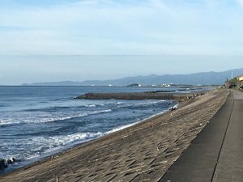
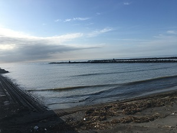
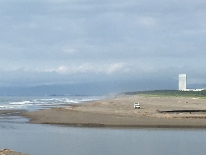

～ 宮崎市 穴場サーフィンスポット ～
一ッ葉ポイント

宮崎市メインホテル・シーガイヤホテルの裏手にある海岸。ビーチポイントだが、サイズが上がるとパワーのある波を形成するポイント。 干潮時がおすすめとなる。
水門ポイント

宮崎港の水門にあるビーチポイントです。台風シーズンなど波サイズがあがり、どこのポイントも入れないときなどにチェックしてみるとよいです。メローな波を味わえます。
佐土原ポイント

宮崎市の伊勢化学工業の裏手にあるポイントです。ビーチブレイクでありますが、地形がよくレギュラー方向に切れる波が特徴です。道路が狭くなりますので、ローカル優先でお願いします。